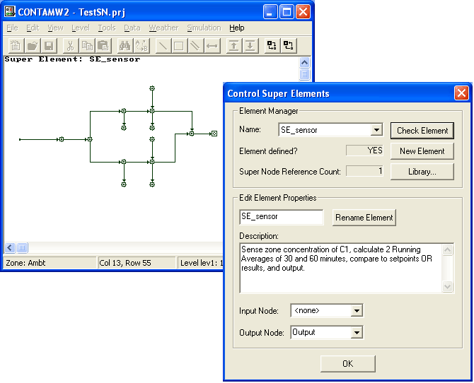
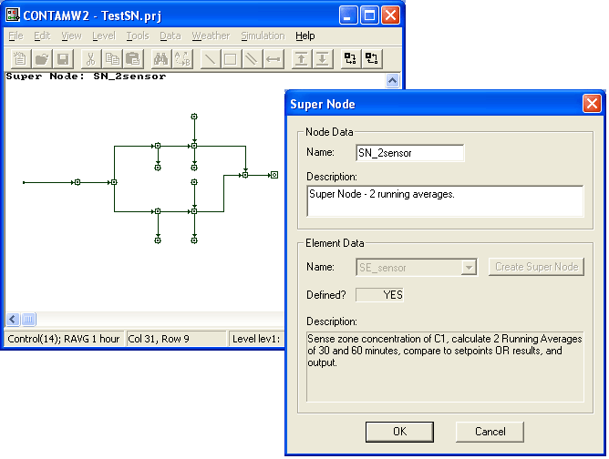

Prior to CONTAM version 2.2, ContamW required you to draw all control networks directly on the main SketchPad even if they shared the same logic and control elements, leading to the potential for much repetitive work. In order to minimize user input and to allow sharing of control logic between different project files, controls have been enhanced to enable the creation of Control Super Elements. Super Elements can be saved in the project file as well as in a new CONTAM Library file type LB5.
Terminology
Super Element - named control logic diagram and accompanying control elements (sub-nodes) from the previously presented list of control elements. In object-oriented programming terms this is similar to a class in that it is not actually used until it is instantiated as an object.
Super Node - an instantiated Super Element. In object-oriented programming terms this would be an object or instance of a user-defined class.
Control Super Element / Super Node SketchPad
With the advent of the new control super element, comes another use of the SketchPad to create and edit super elements and super nodes. When working with super elements only the controls drawing tool is enabled, along with the ability to define the control network icons. This SketchPad is activated via the Data→Controls→Super Elements... menu item. When the Super Element SketchPad is active, the upper left corner of the SketchPad will display "Super Element:" followed by the name of the super element currently displayed on the SketchPad. When working with super elements the "Control Super Elements" dialog box will also be displayed as shown below.

The Super Node SketchPad enables only the modification of existing control sub-node icons, so the control drawing tool will be disabled as will the ability to delete control network icons. The Super Node SketchPad is activated by instantiating an existing control super element or double-clicking on a Super Node icon. When the Super Node SketchPad is active, the upper left corner of the SketchPad will display "Super Node:" followed by the name of the super node currently displayed on the SketchPad. When working with super nodes the "Super Node" dialog box will also be displayed as shown below.

Defining Super Elements
To create a super element you activate the Super Element SketchPad. Unlike other library element types, all super elements must be created and edited within a CONTAM project file. Initiating the super element editing mode activates both the Super Element SketchPad and the Control Super Elements dialog box shown below. Use the SketchPad to draw the super element diagram and define control sub-node types in much the same way as is done for controls on the main SketchPad. The dialog box is provided to name, save and set other super element properties described below.
Deleting Super Elements
You can delete super elements via the CONTAMW Library Manager. Only those super elements that are currently not referenced by a Super Node can be deleted. You can determine whether or not a super element is referenced by the super node reference count provided on the Control Super Element dialog box when displaying a particular super element on the Super Element SketchPad.
Modifying Super Elements
Modifying Super Elements consists of modifying the drawing (i.e., adding and deleting control links and sub-nodes), modifying the properties of individual sub-nodes and modifying the Super Element Properties.
Modifying the drawing – You can only modify the drawing if the super node reference count is 0. This limitation is in effect, because all instances of a super element (i.e., super nodes) reference the sketch data and list of sub-nodes of the super element.
Modifying sub-node properties – You can modify the properties of sub-nodes as you desire. This will not affect existing instances of the super element; however, this will change the default properties of new instances of the super element.
Modifying Super Element properties – You can modify the super element properties as you so desire. This will not affect existing instances as super nodes simply reference the super element properties, but do not create new instances of them.